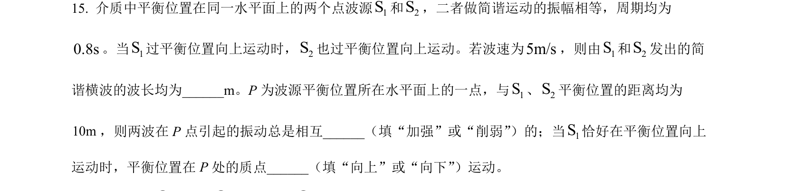
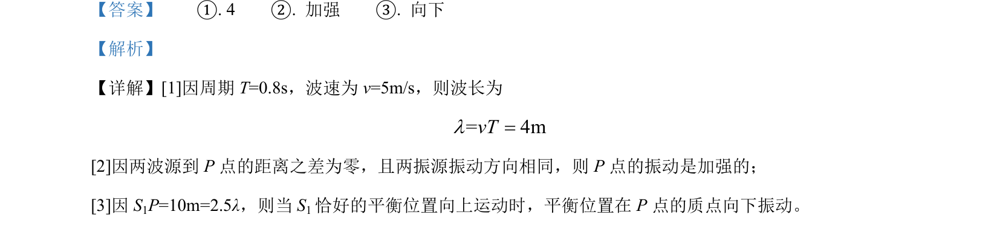

考点：波长 干涉 质点振动方向

考查机械波波长计算与波的干涉现象，判断质点振动方向及振动加强条件。

📄 原 PDF 第 19 页：
素材/真题/吉林/2008-2024·（吉林）物理高考真题/2022年高考物理试卷（全国乙卷）（解析卷）.pdf
【答案】 ①. 4 ②. 加强 ③. 向下 【解析】 【详解】[1]因周期 T=0.8s，波速为 v=5m/s，则波长为 = 4mvTl= [2]因两波源到 P点的距离之差为零，且两振源振动方向相同，则 P点的振动是加强的； [3]因 S1P=10m=2.5λ，则当 S1恰好的平衡位置向上运动时，平衡位置在 P点的质点向下振动。